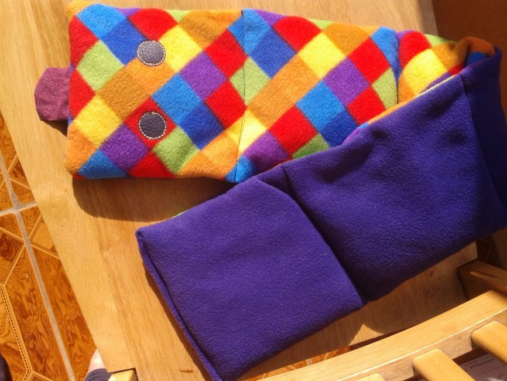

Sensory beanbags
Five sizes from Medium up to XXX-Large, in warm fleece or cooling stretch lycra. From a squishy one-child seat to a 143 cm beanbag the whole class can pile into.
Hand-made in County Cork since 2002
Soft, deep-pressure beanbags and weighted products, made one at a time by Julie Hannon. Trusted by families, schools and occupational therapists across Ireland.

Every beanbag is built around how a child actually uses it — sinking in, wrapping up, pushing against it and climbing back out again.
The inner lining gives softly as a child sinks in, then snugs warmly around the body — the deep, even pressure that helps many children settle.
Hard-wearing, tactile and machine washable. The cover comes off easily, and the whole beanbag — beads and all — can go through the wash.
Julie has been making these in County Cork since 2002. Nothing is mass produced, so sizes, fabrics and weights can be matched to the child.
Five sizes from Medium up to XXX-Large, in warm fleece or cooling stretch lycra. From a squishy one-child seat to a 143 cm beanbag the whole class can pile into.

Made to the weight you need, from 2 lb upwards. Includes guidance on choosing a safe weight for your child — the question we are asked most often.
Parents and therapists tell us the same handful of things come up again and again.
With fewer beans in it, a child can be rolled up inside the beanbag. The all-over pressure is calming and helps with focus.
A comfortable place to be while a child is getting joint compression therapy or having their body brushed.
A soft, safe indoor place to wrestle, jump into and roll about in — sensory feedback from every part of the body.
Stand the beanbag up and it becomes an armchair with full back support — a steadier kind of comfort for reading or story time.
“Mark prefers the blue stretch lycra cover more than the fleece. He likes the tactile sensations, and the fabric gives off a cool feeling.”
No account, no checkout to fight with. Tell Julie what you need and she will look after it.
Call 087 131 9619 or email marihannon@gmail.com with the size you are after. If you are not sure which size suits, say a bit about the child and the room — Julie will advise.
Revolut, bank transfer or PayPal. Cash on delivery is available in Cork city.
€15 to your door anywhere in Ireland, usually the day after it is sent.
Every beanbag is made to order, so there is always someone to ask before you buy. Questions about sizes, fabrics, weights or delivery are all welcome.